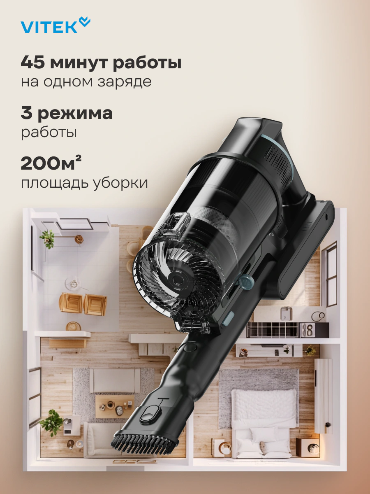
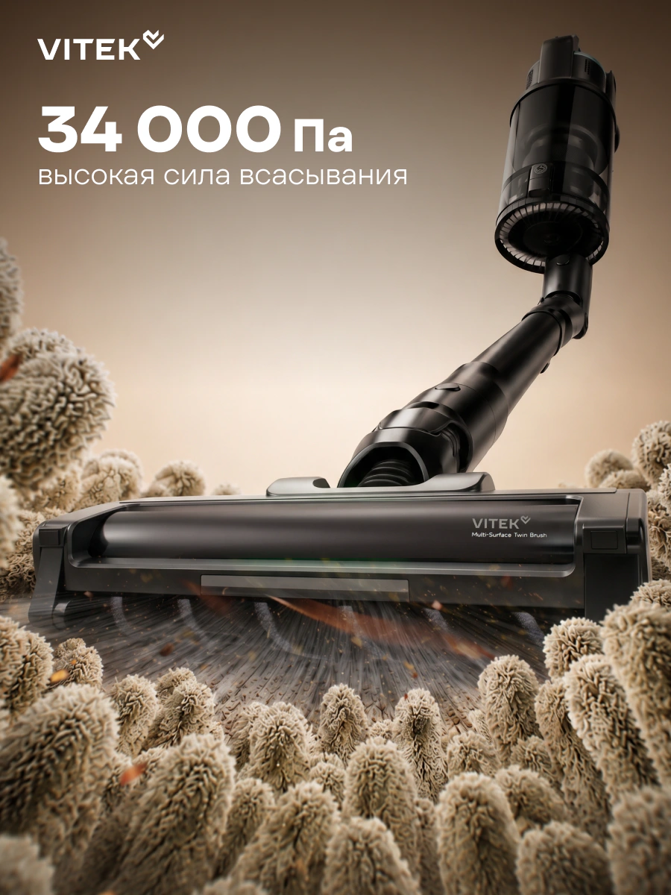
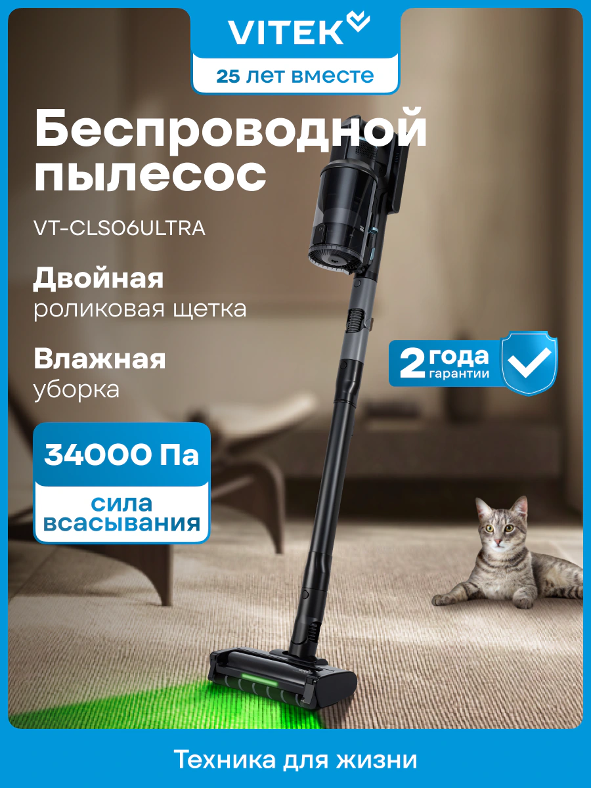
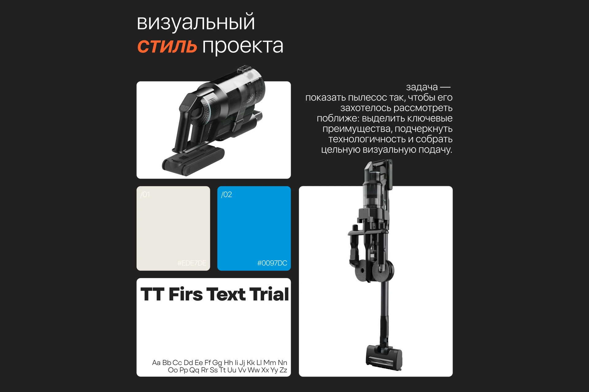
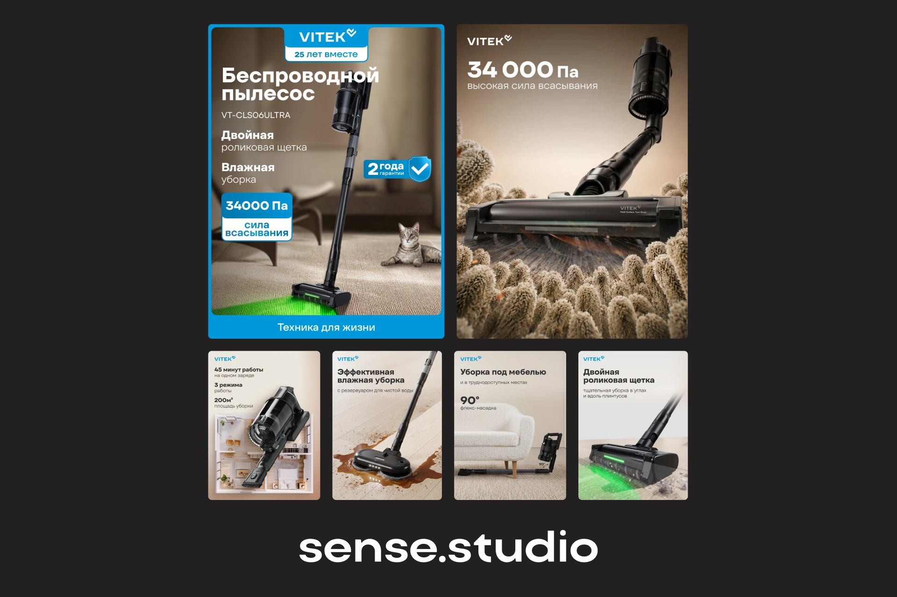

Инфографика для пылесоса VITEK
Устройство и возможности беспроводной модели в серии слайдов



Визуальный стиль инфографики VITEK

Слайды о беспроводном пылесосе

Устройство и возможности беспроводной модели в серии слайдов




